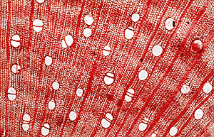

Wooden Egyptian Coffins  Ancient
Egyptian coffins were usually made up of several planks of wood,
joined together by wooden dowels and pegs. Their good preservation
allows fine details of the cellular structure of the wood to be
identified using an optical microscope. By building up a picture
of the different woods selected, we can not only understand more
of the sophisticated techniques of the Egyptian craftsman, but also
discover more about the importance and significance of imported
woods to the ancient Egyptians. Of the many hardwoods available,
the most frequently used wood for ancient Egyptian coffins was from
a type of fig tree (Ficus sycomorus), seen here in transverse thin
section. Sycomore fig wood was available locally and was popular
with the Egyptian coffin manufacturer for making light and moderately
long-lasting timber planks. |